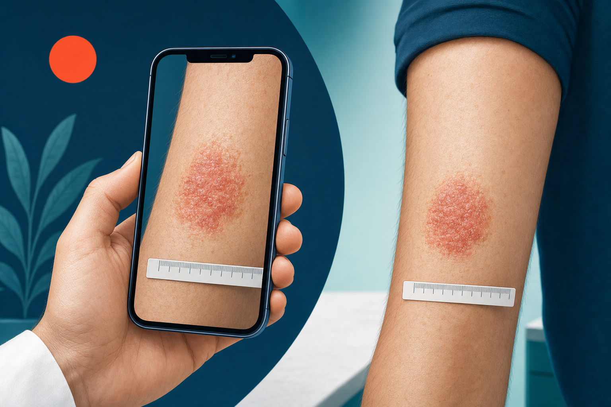
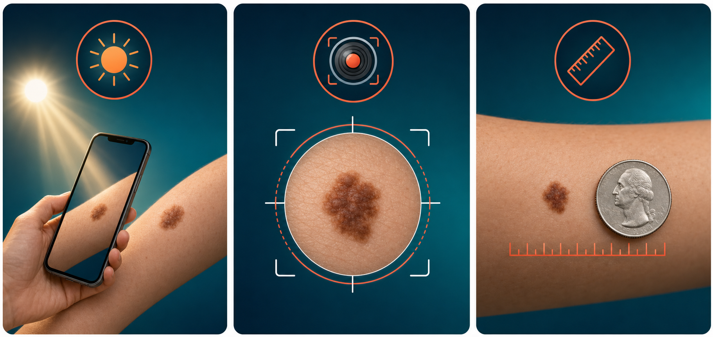

Key Takeaways
- A 2023 systematic review of 44 studies found teledermatology achieves an overall diagnostic concordance of 68.9% with face-to-face evaluation — rising to 75.9% with proper patient photo-acquisition training.[1]
- Acne vulgaris shows near-perfect photographic accuracy. Eczema, contact dermatitis, rosacea, and psoriasis flares are well-suited for photo-based evaluation.[2][4]
- Suspected melanoma, actinic keratosis, and undiagnosed pigmented lesions are not appropriate for photo-only triage — dermoscopy and biopsy remain essential.[4][6]
- Photo quality directly determines diagnostic accuracy — lighting, sharp focus, multiple angles, and a reference object for scale each independently improve concordance rates.[1][9]
- The American Academy of Dermatology requires that patients always retain the option of in-person dermatology care alongside any teledermatology service.[9]

Why This Question Matters
Telehealth and dermatology have an intuitive relationship — skin conditions are visible, and clinicians have always relied on visual examination to diagnose them. That logic has driven rapid growth in photo-based skin evaluation, where a patient submits images that a dermatologist reviews remotely, often called store-and-forward or asynchronous teledermatology.
But a camera and a trained clinician's eye are not the same thing. The question is not whether telehealth can help with skin conditions — it clearly can — but rather: which conditions genuinely lend themselves to photo-based evaluation, and which ones require more than a photograph can convey?
This article works through that distinction using published concordance data, condition-by-condition evidence, and the American Academy of Dermatology's guidance on appropriate use. The goal is a framework that helps patients and clinicians make good decisions about when a photo is enough, and when an in-person evaluation is the right call.
The Evidence: How Well Do Photos Match In-Person Diagnosis?
The best available summary of teledermatology's diagnostic reliability comes from a 2023 systematic review and meta-analysis published in BMJ Open, which pooled data from 44 studies comparing store-and-forward teledermatology with face-to-face dermatology assessment.[1] The pooled diagnostic agreement rate was 68.9% (95% CI: 64.4%–73.1%), with a kappa concordance of 0.67 — generally considered "substantial agreement" in diagnostic research.
That number, taken alone, understates the technology's potential. When studies provided patients with brief photo-acquisition training, concordance rose to 75.9% and kappa improved to 0.77. Digital cameras outperformed smartphones (71.7% vs. 59.8%), though modern smartphone camera quality continues to close that gap. The range across individual studies ran from 13.9% to 98.0% — a spread that shows how much technique, condition type, and image quality each matter.[1]
A 2025 randomized cohort study at the American University of Beirut tested three photo acquisition methods in 360 dermatology patients.[2] Unassisted patient-taken photos produced 79% diagnostic concordance. After a brief standardized training session, that figure rose to 84%. Resident-taken clinical photos achieved 87%. Acne had the highest diagnostic match across all three groups.
In a large Israeli health system study, when patients followed up in-person after a store-and-forward consultation, the concordance between teledermatology and the subsequent face-to-face diagnosis was 97.4% — with true discordance (different diagnosis) occurring in only 1.4% of cases.[3] Across a 21,725-patient German cohort using the asynchronous image-text method, 81.2% of patients needed no further follow-up contact after the initial teledermatology consultation.[8]
The consistent pattern across the evidence: photo-based teledermatology performs well for common inflammatory and morphologically distinct skin conditions, and poorly when the diagnosis depends on lesion characteristics that photographs cannot capture — depth, texture on palpation, bleeding on manipulation, and microscopic dermoscopic patterns.
Conditions Where Photos Are Enough
Several common dermatologic conditions are well-matched to store-and-forward evaluation because their diagnosis depends primarily on visual morphology, distribution pattern, and clinical history — all of which photographs can convey effectively.
Acne vulgaris has the strongest evidence. A head-to-head study comparing teledermatology with face-to-face diagnosis in 110 patients with suspected acne found 100% sensitivity, specificity, and diagnostic accuracy for the virtual approach.[5] Facial distribution, lesion type (comedones, papules, pustules, nodules), and severity grading are all assessable from good-quality photographs. Teledermatology billing data confirms that acne and rosacea together accounted for more than 60% of dermatologist teledermatology claims in 2019, rising to 75% in 2020.[4]
Eczema and atopic dermatitis are also highly suited. In a county hospital teledermatology program, only 3% of eczema cases required in-person referral — the lowest referral rate of any condition studied.[4] The distribution pattern (flexural areas, bilateral symmetry), surface texture (lichenification, weeping, scaling), and response to prior treatment all transmit well in photographs when the images include wide context shots alongside close-ups.
Contact dermatitis is similarly manageable remotely in most cases, particularly when the exposure history is clear. Rosacea, with its characteristic centrofacial erythema and telangiectasia, is photogenically distinct. Psoriasis flares in patients with an established diagnosis are routinely handled by teledermatology — the thick, silvery plaques on elbows, knees, or scalp are difficult to misidentify. Tinea infections (ringworm, athlete's foot, jock itch) show characteristic annular patterns and peripheral scaling that photograph reliably. Seborrheic dermatitis, urticaria with clear triggers, and insect bites also resolve well in the store-and-forward model.

Conditions Where Photos Are NOT Enough
The same evidence base that validates photo-based dermatology for inflammatory conditions is equally clear about its limits. Certain presentations require in-person evaluation, and bypassing that standard creates real clinical risk.
Suspected melanoma and atypical pigmented lesions sit firmly in the not-appropriate category. The meta-analysis by Bourkas et al. found that agreement between teledermatology and histopathology — the reference standard for skin cancer diagnosis — was only 55.7% across all skin biopsies.[1] Melanoma diagnosis requires dermoscopy, a technique using polarized light magnification that reveals subsurface structures invisible to standard photography. Amelanotic melanomas, in particular, lack the pigment patterns that might raise photographic suspicion and have historically been referred as "routine" cases — only to be found at advanced Breslow thickness when eventually biopsied.
Actinic keratoses and lesions suspected of nonmelanoma skin cancer (basal cell carcinoma, squamous cell carcinoma) were referred to in-person evaluation in 100% of cases in one systematic teledermatology program analysis.[4] Palpation matters here — the sandpaper texture of an actinic keratosis and the pearly raised border of a BCC are characteristics a photograph compresses into a flat image.
Other conditions that do not belong in a photo-only evaluation include: deep skin infections such as cellulitis or a fluctuant abscess, where warmth, induration, and fluctuance require hands-on assessment; vesiculobullous eruptions of uncertain cause, which may require biopsy with direct immunofluorescence for conditions like pemphigus or bullous pemphigoid; scarring alopecias, where dermoscopy of the scalp and often a punch biopsy are necessary for diagnosis; and any widespread rash with systemic symptoms (fever, arthralgias, mucous membrane involvement) where the differential includes drug reactions, vasculitis, or autoimmune conditions requiring urgent workup.
Factors that contribute most to diagnostic discordance in store-and-forward teledermatology include poor photo quality, absence of dermoscopy for pigmented lesions, conditions requiring palpation, and presentations where the total body distribution matters but is not fully photographed.[6]
Condition Reference Table
| Condition | Photo Sufficient? | Concordance with In-Person | Recommended Action |
|---|---|---|---|
| Acne vulgaris | Yes | ~100% (multiple studies)[5] | Teledermatology or in-person both appropriate |
| Eczema / atopic dermatitis | Yes | ~97% managed remotely[4] | Teledermatology appropriate; flares can be evaluated by photo |
| Rosacea | Yes | ~75% managed remotely[4] | Teledermatology appropriate for typical presentations |
| Contact dermatitis | Yes | ~67% managed remotely[4] | Teledermatology appropriate when exposure history is clear |
| Psoriasis (known diagnosis, flare) | Yes | High for established morphology[8] | Teledermatology appropriate for established patients |
| Tinea / ringworm | Yes | Characteristic pattern; good photographic fidelity | Teledermatology appropriate; confirm with antifungal response |
| Seborrheic dermatitis | Yes | ~90% managed remotely[4] | Teledermatology appropriate |
| Suspected melanoma / atypical pigmented lesion | No | 55.7% vs histopathology[1] | In-person dermatology with dermoscopy; biopsy if indicated |
| Actinic keratosis / NMSC | No | 100% referred in-person[4] | In-person dermatology required |
| Scarring alopecia | No | 100% referred in-person[4] | Dermoscopy + biopsy; in-person evaluation essential |
| Cellulitis / deep infection | No | Palpation required; photos insufficient[6] | In-person or urgent care evaluation |
| Vesiculobullous eruption (unknown cause) | No | Biopsy / immunofluorescence required | In-person dermatology; possible urgent workup |
| Warts (treatment needed) | Partial | ~91% require in-person for procedure[4] | Photo may confirm diagnosis; treatment requires in-person |
Photo Quality That Matters
The meta-analysis data make one thing clear: photo quality is the single most modifiable factor in teledermatology accuracy. Studies with trained photo acquisition consistently outperform those without. The AAD's teledermatology platform standards specify a minimum resolution of 800×600 pixels — a threshold every modern smartphone exceeds — but resolution alone does not determine usability.[9]
Lighting matters most. Natural, diffuse daylight produces the most color-accurate images. Position yourself facing the light source so the skin is evenly illuminated, avoiding shadows and glare. Camera flash tends to wash out texture and color. Overhead indoor lighting is rarely adequate for clinical-quality images.
Focus is equally important. Tap the screen on the area of concern to engage autofocus before shooting. Moving the camera closer to the lesion then re-tapping produces better results than digital zoom, which degrades image quality. Out-of-focus photos are among the most common reasons teledermatology consultations are returned without a diagnosis.[7]
Multiple angles add clinical context that a single photo cannot provide. Take a wide establishing shot to show body location and extent, then a close-up to capture lesion detail. For raised or textured lesions, an oblique angle photograph showing the lesion in profile helps clinicians assess elevation.
A reference object for scale — a US quarter, a ruler, or a standard coin — placed adjacent to the lesion gives the reviewing clinician a measurable reference. Lesion size is clinically significant, and "the size of a pencil eraser" is less reliable than a coin photograph that anyone can cross-reference.
Leave some surrounding normal skin visible in every frame. Seeing where normal tissue ends and affected tissue begins is part of the visual assessment.
What This Means for You
Store-and-forward teledermatology and in-person dermatology serve different, often complementary roles. Neither replaces the other.
The teledermatology pathway works well for common, morphologically distinct conditions in patients who are willing to submit high-quality photographs with a complete symptom history. Acne, eczema flares, rosacea, contact dermatitis, tinea, and psoriasis in established patients are consistently managed this way with strong outcomes. Access is faster — typically within 24–48 hours for asynchronous platforms — and the convenience matters for patients managing chronic conditions who need prescription adjustments or flare management without taking time off work for a clinic appointment.
The in-person dermatology pathway remains essential for any lesion with melanoma concern, any undiagnosed pigmented lesion, suspected skin cancers of any type, conditions requiring palpation or dermoscopy, vesiculobullous eruptions of unclear cause, suspected deep infections, and any presentation where photographs have been submitted but the reviewing clinician has requested additional evaluation. In-person care is also the right starting point for a patient who has never received a diagnosis for a new skin finding — teledermatology tends to work best when the condition has already been characterized.
The AAD is explicit that teledermatology services must always offer patients the option to access in-person dermatology care when needed, and that virtual access should not substitute for locally available dermatologists who provide the full spectrum of medical and surgical skin care.[9] Primary care physicians, urgent care centers, and board-certified dermatologists all remain part of the referral pathway when a skin finding warrants more than a photograph can offer.
Bottom Line
Photo-based teledermatology is well-supported by evidence for common inflammatory skin conditions. Acne, eczema, rosacea, contact dermatitis, and psoriasis flares each show strong concordance with in-person assessment when patients submit adequately trained, high-quality images. The technology fails — predictably — when applied to conditions that require palpation, dermoscopy, or biopsy. Suspected melanoma, nonmelanoma skin cancers, and undiagnosed pigmented lesions require in-person evaluation regardless of photo quality. Understanding that boundary is what makes photo-based teledermatology a safe and effective part of dermatologic care — rather than a workaround that bypasses necessary evaluation.
References
- Bourkas AN, Barone N, Bourkas MEC, Mannarino M, Fraser RDJ, Lorincz A, Wang SC, Ramirez-GarciaLuna JL. "Diagnostic reliability in teledermatology: a systematic review and a meta-analysis." BMJ Open. 2023;13(8):e068207. pmc.ncbi.nlm.nih.gov/articles/PMC10423833/
- Saade S, Khoury D, Abou Shahla W, et al. "Teledermatology Diagnostic Accuracy: A Randomized Cohort Study Comparing Three Image Acquisition Techniques." International Journal of Telemedicine and Applications. 2025. onlinelibrary.wiley.com/doi/10.1155/ijta/5789165
- Shapiro J, Kaplan Lavi I, Kun D, Ingber A, Freud T, Grunfeld O. "Does the Diagnostic Accuracy and Rates of Face-to-Face Visits Occurring Shortly after an Asynchronized Teledermatology Consultation Justify Its Implementation? An 18-Month Cohort Study." Dermatology. 2024. karger.com/article/doi/10.1159/000537823
- Funkhouser CH, Funkhouser ME, Wolverton JE, Maurer T. "Teledermatology Consults in a County Hospital Setting: Retrospective Analysis." JMIR Dermatology. 2021;4(2):e30530. pmc.ncbi.nlm.nih.gov/articles/PMC10334958/
- Rangkuti ADP, Jusuf N, Putra I. "Comparison between the diagnosis of acne vulgaris by teledermatology and face-to-face consultations." Bali Medical Journal. 2021;10(3). balimedicaljournal.org/index.php/bmj/article/view/2792
- Lee MS, Stavert RR. "Factors Contributing to Diagnostic Discordance Between Store-and-Forward Teledermatology Consultations and In-Person Visits: Case Series." JMIR Dermatology. 2021;4(1):e24820. pmc.ncbi.nlm.nih.gov/articles/PMC10501508/
- Jones L, Oakley A. "Store-and-Forward Teledermatology for Assessing Skin Cancer in 2023: Literature Review." JMIR Dermatology. 2023;6:e43395. pmc.ncbi.nlm.nih.gov/articles/PMC10335330/
- Lindemann H, Frank J, Bonetzki T. "Diagnostic spectrum and therapeutic efficiency in teledermatology — Results of the largest cohort study to date." Journal of Dermatology. 2023. onlinelibrary.wiley.com/doi/pdfdirect/10.1111/1346-8138.16769
- American Academy of Dermatology. "AAD Position Statement on Teledermatology." Updated 2021. aad.org/member/practice/telederm/standards
- American Academy of Dermatology. "AAD Teledermatology Standards." AAD Teledermatology Standards (PDF)